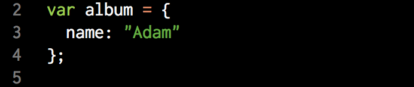
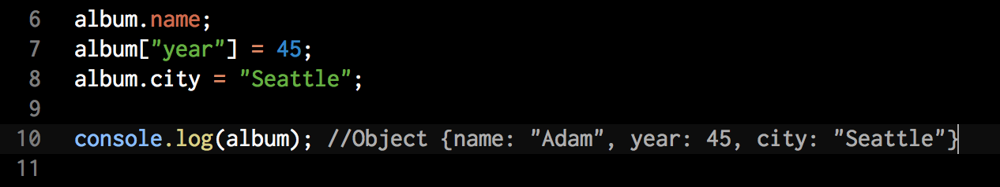
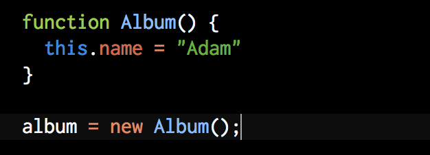

How are Javascript objects created?
In JS you can create objects using to ways. First is the literal method:
There are several examples how we can read property, add new propery. You can see that it similar to the Ruby hash.
Or you can using functions and the new operator. This is constructor functions because the purpose is to create new objects.
Since this is function, we can initialize objects. In this example we are assigning properties. In Ruby we did the same with initialize instance method. And now maybe you have quastion why in JS there are to ways to create objects. If you needed to create multiple objects, it would be pretty cumbersome to define them using the literal method over and over. Constructor functions provide a way to define behaviour which is shared by all new objects that are created by that function. This shared behaviour is made possible by the Function.prototype property. Javascript is a classless language, but the prototype property on a function the closest thing to any notion of classes. The prototype is not a class but an ordinary object, and so you can mold this object by adding properties: